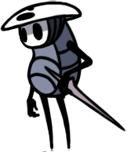

Uma zona que parece muito confusa a primeira vista, mas muito bonita. O verde da vegetação que se espalhou por causa do caminho verde continua a se propagar, mas se mistura com as agua-vivas, que não parecem ser hostis, mas guardam um segredo grande. Um grande laboratório se encontra no meio da área, mas bloqueado por ácido. Aqui existe uma grande progressão na história, mas talvez você tenha de voltar aqui mais tarde...
Uma zona que parece muito confusa a primeira vista, mas muito bonita. O verde da vegetação que se espalhou por causa do caminho verde continua a se propagar, mas se mistura com as agua-vivas, que não parecem ser hostis, mas guardam um segredo grande. Um grande laboratório se encontra no meio da área, mas bloqueado por ácido. Aqui existe uma grande progressão na história, mas talvez você tenha de voltar aqui mais tarde...
"Então ela também te chamou? Vejo que não é nenhuma coincidência que tenhamos chegado juntos.
Apesar de ter perdido muito a minha memória, eu lembro deste lugar.
Dentro destas câmaras a Professora tentou armazenar o conhecimento do reino e em seu interior, ela armazenou a si mesma.
Para salvar Hallownest, a Professora se converteu voluntariamente em um selo, mas sobre si mesma ela conjurou uma proteção adicional.
Embora eu não consiga lembrar que aconteceu, eu participei desse feito.
Ela me chamou aqui, agora, para reverter essa proteção. Tudo para te ajudar" - Quirrel